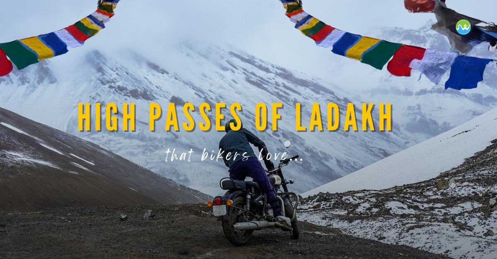
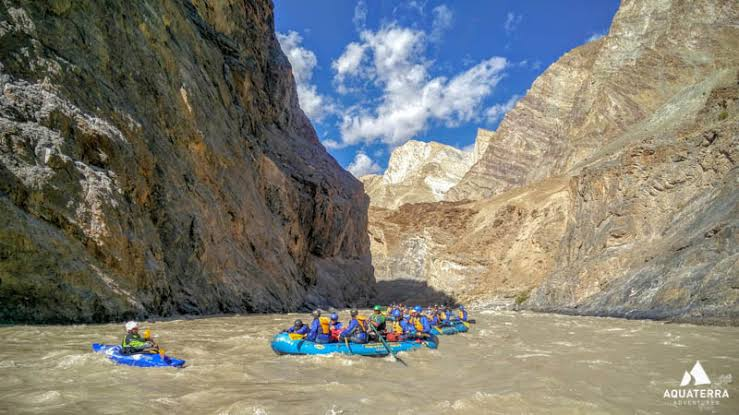
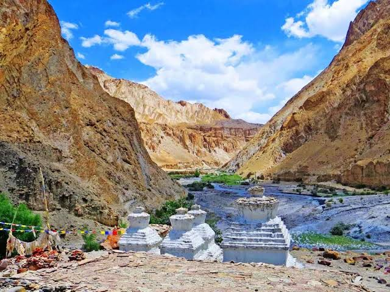
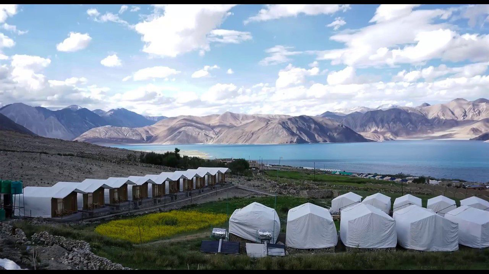

The Land of High Passes & Cosmic Landscapes
Perched at a staggering altitude of 3,500 meters in the rain shadow of the mighty Himalayas, Leh Ladakh is a high-altitude cold desert like no other. It is a vast terrain of stark, barren mountains, deep winding gorges, ancient Tibetan monasteries, and brilliant sapphire lakes that sit under an impossibly blue sky. For adventure seekers, it is the ultimate arena of raw endurance.
Ladakh feels intensely spiritual yet fiercely rugged. The quiet hum of prayer wheels and fluttering colorful flags balances the roaring engines of Royal Enfield convoys tackling deep gravel riverbeds. The air is crisp, thin, and pure, and the vast scale of the empty, wind-scoured mountain vistas makes you feel small, focused, and profoundly connected to the raw power of the planet.

Ride iconic dual-sport bikes over some of the highest motorable roads in the world, including Khardung La and Umling La, tackling loose scree and narrow cliffside switchbacks.

Plunge through spectacular, towering stone canyons on a freezing glacier-fed torrent. Experience world-class Grade III and IV white-water rapids deep in the wilderness.

A demanding multi-day trek crossing high alpine passes, freezing river fords, and remote nomadic hamlets shadowed by the majestic 6,153-meter Kang Yatse peak.

Set up camp on the shores of a massive salt lake at 4,225 meters. Face sub-zero night winds and capture pristine, distortion-free views of the Milky Way galaxy.